Created by Delwin Clarke on 29-May-08.
Created by Delwin Clarke on 29-May-08.
|

|
(1) quick and slow time - 75 cm. (approximately 30 inches)
(2) stepping out in quick and slow time - 85 cm. (approximately 33 inches)
(3) stepping short in quick and slow time - 55 cm. (approximately 21 inches)
(4) double time - 1 m. (approximately 40 inches)
(1) quick time - 120 paces per minute (two paces per second)
(2) slow time - 60 paces per minute (one pace per second)
(3) double time - 180 paces per minute (three paces per second)
(1) when advancing in line, the right flank
(2) when retiring in line, the left flank
(3) when in diagonal march to the front, the right flank and when in diagonal march to the rear, the left flank
(4) when in two or three files, the original front rank; e.g., when moving to the right, the dressing is by the left; when moving to the left, the dressing is by the right
| Drill Movement | Foot |
| HALT (quick/double time) | left |
| HALT (slow time) | right |
| STEP OUT or STEP SHORT | left |
| MARK TIME | right |
| FORWARD | left |
| CHANGE STEP | right |
| TO THE RIGHT/LEFT/FRONT SALUTE | left |
| EYES RIGHT/LEFT/FRONT | left |
| RIGHT TURN/INCLINE/FORM | left |
| LEFT TURN/INCLINE/FORM | right |
| ABOUT TURN | right |
| CHANGE TO QUICK/SLOW/DOUBLE TIME | right |
| FORM SINGLE FILE FROM TWOS/THREES/IN LINE | right |
| REFORM TWOS/THREES/IN LINE FROM SINGLE FILE | right |
| OPEN/CLOSE ORDER | right |
|
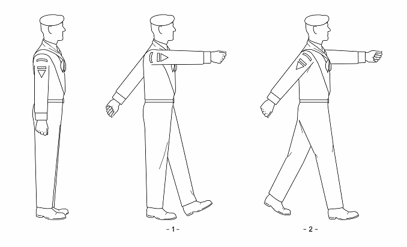 |
| Figure 3-1: Marching in Quick Time |
(1) shoot the left foot forward a half (35 cm.) pace in quick time, heel on the ground and toe up
(2) simultaneously, swing the right arm straight forward shoulder high and the left arm straight backward waist high, keeping the arms straight and fists closed as for the position of attention
(1) step forward with the right foot a standard length (75 cm.) pace in quick time, placing the foot flat on the ground with the weight on the right foot and the left heel raised
(2) simultaneously, swing the left arm forward shoulder high and the right arm backward waist high
(3) maintain dressing by the directing flank
(1) take a standard (75 cm.) pace forward with the right foot in quick time, placing it flat on the ground, with the weight on the right foot and the left heel raised
(2) simultaneously, swing the left arm forward and the right arm backward
(1) take a half (35 cm.) pace forward with the left foot in quick time, placing it flat on the ground, with the weight on the left foot and the right heel raised
(2) simultaneously, swing the right arm forward and the left arm backward
(1) in quick time, bend the right knee so that the thigh is parallel to the ground, then straighten the leg and place the right foot smartly beside the left
(2) simultaneously, bring the arms sharply to the sides and assume the position of attention
|
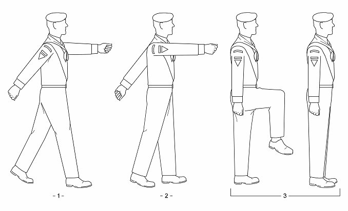 |
| Figure 3-2: Halting in Quick Time |
|
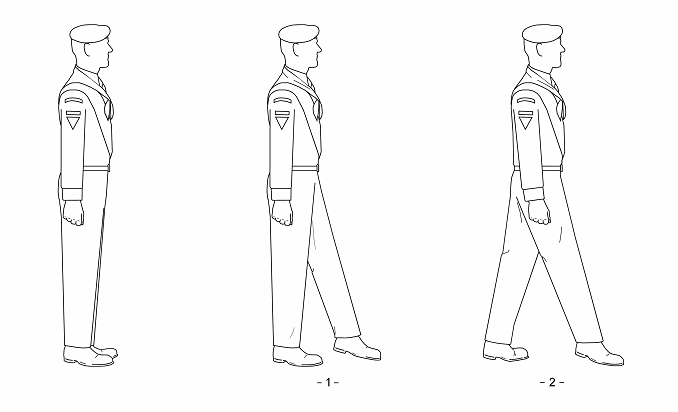 |
| Figure 3-3: Marching in Slow Time |
(1) extend the left foot forward a half (35 cm.) pace in slow time, toes pointing downward and just clear of the ground, with the left outer ankle turned slightly downward
(2) maintain the head and body erect and square to the front, arms straight at the sides
(1) place the left foot flat on the ground, toe first, then glide the right foot forward a standard (75 cm.) pace in slow time with the foot positioned as described above, keeping the right leg as straight as possible and the weight on the left foot
(2) maintain dressing by the directing flank
(1) shift the weight to the left foot
(2) in quick time, bend the right knee so that the thigh is parallel to the ground then straighten the leg, placing the right foot smartly beside the left, and assume the position of attention
|
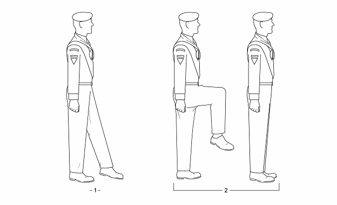 |
| Figure 3-4: Halting in Slow Time |
(1) step forward 1 m. with the left foot and jog on the balls of the feet with easy swinging strides, inclining the body slightly forward
(2) raise the feet clear of the ground at each pace
(3) bend the arms at the elbow and swing the arms naturally from the shoulder with the hands closed as for the position of attention
(4) maintain dressing by the directing flank
(1) complete two paces in double time
(2) bring the right foot to the left after the second pace and, simultaneously, drop the arms sharply to the sides and assume the position of attention
|
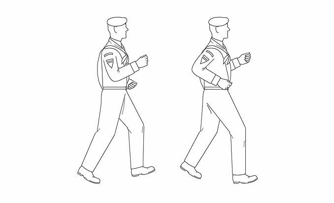 |
| Figure 3-5: Marching in Double Time |
(1) take a standard (75 cm.) pace forward with the right foot then lengthen pace by 10 cm. (approximately 3 inches) as the left foot next strikes the ground
(2) continue to march with lengthened paces until the command QUICK – MARCH is ordered
(1) take a standard (75 cm.) pace forward with the right foot then shorten pace by 20 cm. (approximately 9 inches) as the left foot next strikes the ground
(2) the squad shall continue to march with shortened paces until the command QUICK – MARCH is ordered
(1) take a half (35 cm.) pace forward with the left foot in quick time, placing it flat on the ground, with the weight on the left foot and the right heel raised
(2) simultaneously, swing the right arm forward and the left arm backward
(1) bring the right foot in to the left in quick time, keeping the right leg straight and foot not scraping the ground
(2) simultaneously, bring the arms sharply to the sides and assume the position of attention
(1) bend the left knee so that the thigh is parallel to the ground, then straighten the leg placing the left foot on the ground beside the right
(2) raise the right knee and continue marking time until the command FOR – WARD or HALT is given
(1) straighten the right leg
(2) as the right foot is placed flat on the ground, shoot the left foot forward a half (35 cm.) pace, swinging the right arm forward and the left arm backward
(3) take a standard (75 cm.) pace forward with the right foot, swinging the left arm forward and right arm backward, and continue marching in quick time
(1) take a further mark time pace with the right foot
(2) take a further mark time pace with the left foot
(3) straighten the right leg and assume the position of attention
|
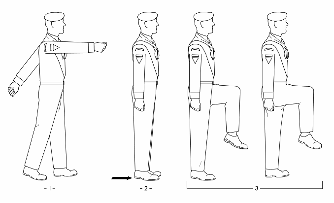 |
| Figure 3-6: Marking Time in Quick Time |
(1) shift the weight to the left foot
(2) bring the right foot in to the left in slow time, keeping the right leg straight and foot not scraping the ground, and assume the position of attention
(1) bend the left knee so that the thigh is parallel to the ground, then straighten the leg placing the left foot on the ground beside the right
(2) raise the right knee and continue marking time until the command FOR – WARD or HALT is given
(1) straighten the right leg
(2) as the right foot is placed flat on the ground, shoot the left foot forward a half (35 cm.) pace, toe just clear of the ground
(3) take a standard (75 cm.) pace forward with the right foot and continue marching in slow time
(1) take a further mark time pace with the left foot in slow time
(2) straighten the right leg in quick time and assume the position of attention
|
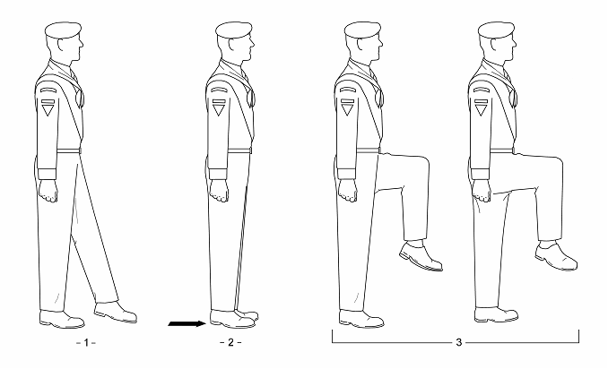 |
| Figure 3-7: Marking Time in Slow Time |
|
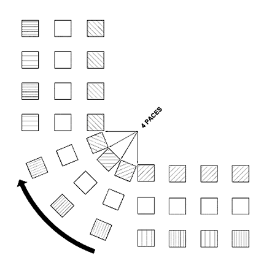 |
| Figure 3-8: Wheeling |
(1) complete a full marching pace
(2) without moving either the front foot or the arms, swiftly bring the inside edge of the rear foot up to meet the heel of the front foot
(3) as the rear foot touches the front heel shoot the front foot forward a half (35 cm.) pace, heel on the ground, keeping the arms fixed in position
(4) shift the weight to the front foot and step forward a standard (75 cm.) pace with the rear foot, swinging the rear arm forward and the front arm backward, and continue marching in quick time
|
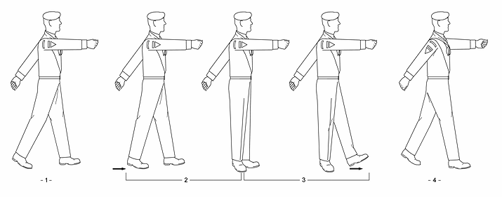 |
| Figure 3-9: Changing Individual Step in Quick Time |
(1) take a half (35 cm.) pace forward with the left foot in quick time, placing it flat on the ground, with the weight on the left foot and the right heel raised
(2) simultaneously, swing the right arm forward and the left arm backward
(1) bring the arms sharply to the sides as for the position of attention
(2) simultaneously, and in double time, bend the right knee so that the right foot is 15 cm. (approximately 6 inches) above the ground then straighten the leg, placing the right foot smartly beside the left
(3) as the right foot strikes the ground, shoot the left foot forward a half (35 cm.) pace, landing on the heel with the toe up
|
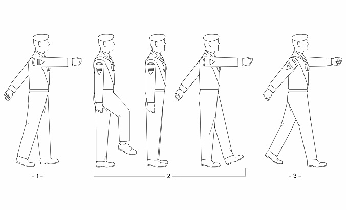 |
| Figure 3-10: Changing Step as a Unit in Quick Time |
(1) shift the weight to the left foot
(2) in quick time, bend the right knee so that the thigh is parallel to the ground, then straighten the right leg, placing the right foot smartly beside the left
(3) as the right foot strikes the ground, shoot the left foot forward a half (35 cm.) pace, toe on the ground and with the weight on the right foot
|
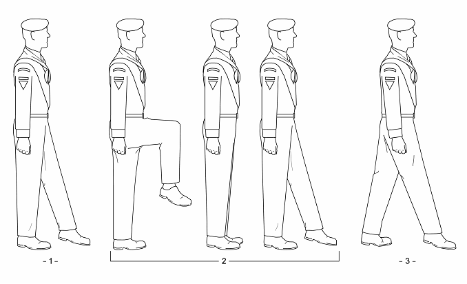 |
| Figure 3-11: Changing Step as a Unit in Slow Time |
|
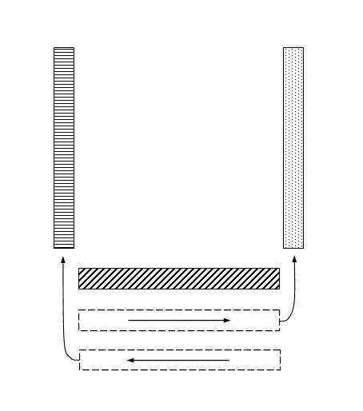 |
| Figure 3-12: Forming a Hollow Square |
(1) take a standard (75 cm.) pace with the left foot
(2) simultaneously, bring the left arm down sharply to the side and the right arm forward, first to the side of the body, then up into the salute, and
(3) turn the head sharply in the appropriate direction if saluting to the right or left
(1) take a standard (75 cm.) pace with the right foot
(2) simultaneously, bring the right arm down sharply to the side, and
(3) turn the head sharply to the front if the salute was to the right or left
|
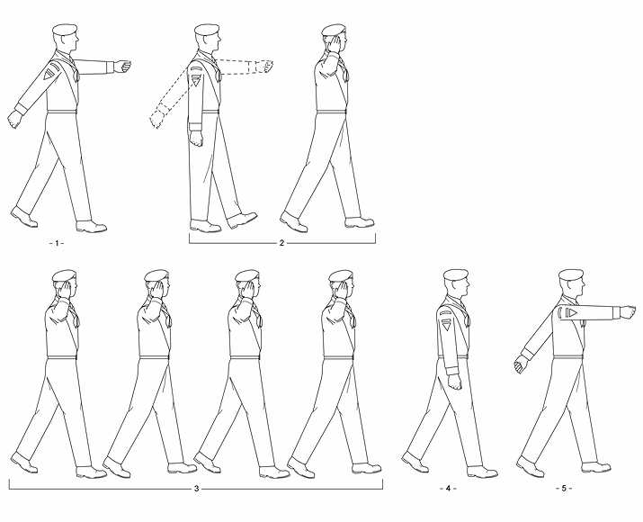 |
| Figure 3-13: Saluting on the March |
(1) take a standard (75 cm.) pace with the left foot, swinging the right arm forward and the left arm backward
(2) as the left foot strikes the ground, all except the marker shall turn their head and eyes sharply to the right (left) as far as possible without straining and look directly into the eyes of the person being saluted
(3) the person in command of the squad salutes in accordance with the directions for saluting on the march
(1) take a standard (75 cm.) pace with the left foot, swinging the right arm forward and the left arm backward
(2) as the left foot strikes the ground, all except the marker shall turn their head and eyes sharply to the front
(3) the person in command of the squad brings his right arm down sharply to the side then swings his arms on the next left foot
(1) take a half (35 cm.) pace forward with the right foot in quick time, placing it flat on the ground, with the weight on the right foot and the left heel raised
(2) simultaneously, swing the left arm forward and the right arm backward
(1) bring the arms sharply to the sides as for the position of attention
(2) simultaneously, and in quick time, bend the left knee so that the thigh is parallel to the ground and, using the momentum of the knee, pivot on the ball of the right foot 90 degrees to the right
(3) straighten the left leg in quick time, placing the left foot smartly beside the right and assume the position of attention
|
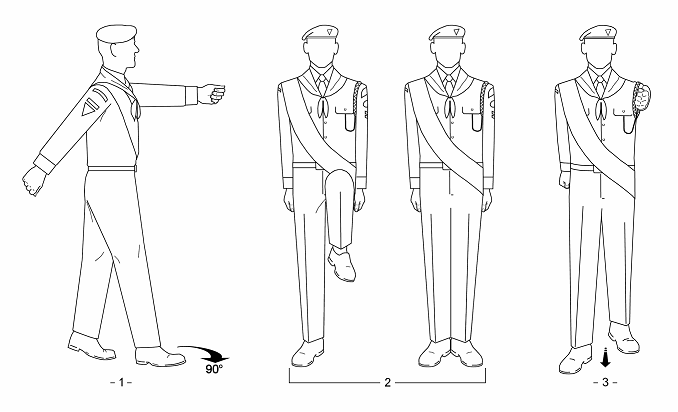 |
| Figure 3-14: Right Turn in Quick Time |
(1) shift the weight to the right foot
(2) in slow time, bend the left knee so that the thigh is parallel to the ground and, using the momentum of the knee, pivot on the ball of the right foot 90 degrees to the right
(3) straighten the left leg in slow time, placing the left smartly foot beside the right and assume the position of attention
(1) shift the weight to the right foot
(2) take a standard (75 cm.) pace with the left foot and continue marching in slow time
|
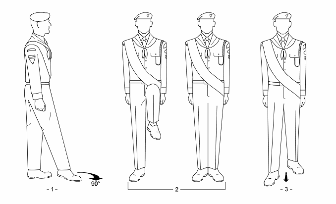 |
| Figure 3-15: Right Turn in Slow Time |
(1) bring the right foot in to the left in quick time, keeping the right leg straight and foot not scraping the ground
(2) simultaneously, bring the arms sharply to the sides and assume the position of attention
(1) in quick time, bend the left knee so that the thigh is parallel to the ground and, using the momentum of the knee, pivot on the ball of the right foot 90 degrees to the right
(2) straighten the left leg in quick time, placing the left foot smartly beside the right and assume the position of attention
(1) in quick time, bend the right knee so that the thigh is parallel to the ground and, using the momentum of the knee, pivot on the ball of the left foot 90 degrees to the right
(2) straighten the right leg in quick time, placing the right foot smartly beside the left and assume the position of attention
|
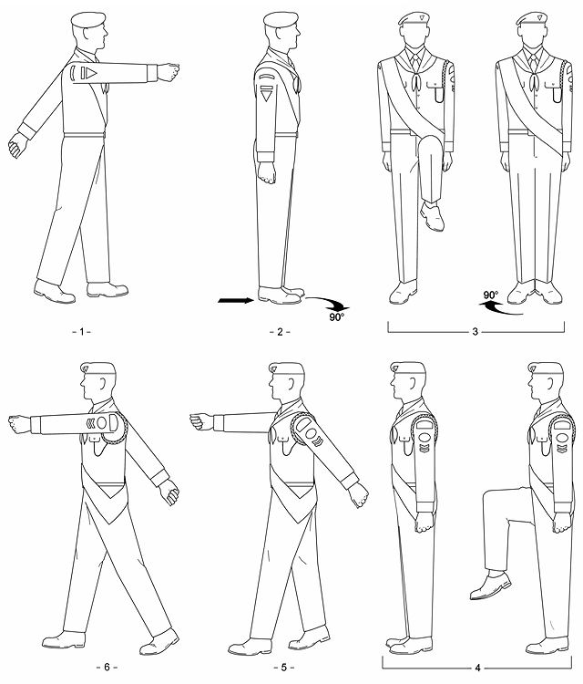 |
| Figure 3-16: About Turn in Quick Time |
(1) shift the weight to the left foot
(2) bring the right foot in to the left in slow time, keeping the right leg straight and foot not scraping the ground, and assume the position of attention
(1) in slow time, bend the left knee so that the thigh is parallel to the ground and, using the momentum of the knee, pivot on the ball of the right foot 90 degrees to the right
(2) straighten the left leg in slow time, placing the left foot beside the right and assume the position of attention
(1) in slow time, bend the right knee so that the thigh is parallel to the ground and, using the momentum of the knee, pivot on the ball of the left foot 90 degrees to the right
(2) straighten the right leg in slow time, placing the right foot smartly beside the left and assume the position of attention
|
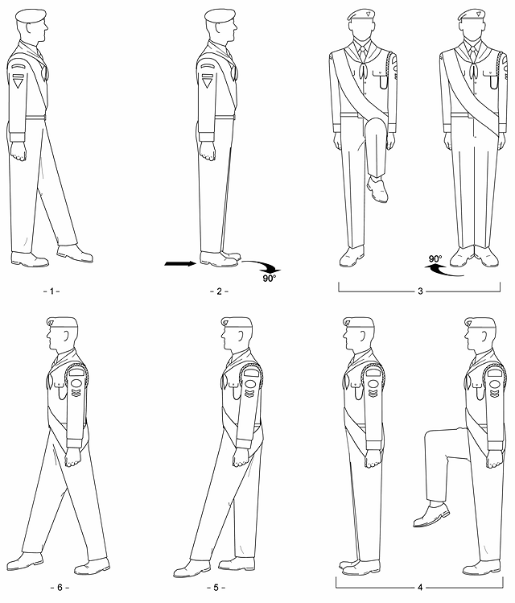 |
| Figure 3-17: About Turn in Slow Time |
(1) bring the arms sharply to the sides
(2) simultaneously, and in quick time, bend the right knee so that the thigh is parallel to the ground then straighten the leg in quick time, placing the right foot smartly beside the left and assume the position of attention
(1) shift the weight to the left foot
(2) take a standard (75 cm.) pace forward with the right foot and continue marching in slow time
(1) the marker turns right
(2) the squad commander and remainder of the front rank incline right
(3) the centre and rear ranks stand fast
(1) the marker marches forward five paces in quick time then halts
(2) the remainder of the squad marches in quick time, wheeling right as necessary to maintain straight ranks, with squad members in the centre and rear ranks following those directly in front in their respective files
(3) upon reaching its new position each file shall halt facing the new direction, in succession from right to left, and remain at attention
(1) the marker marches forward five paces in quick time then begins marking time
(2) the remainder of the squad marches in quick time, wheeling right as necessary to maintain straight ranks, with squad members in the centre and rear ranks following those directly in front in their respective files
(3) upon reaching its new position each file shall begin marking time facing the new direction, in succession from right to left
|
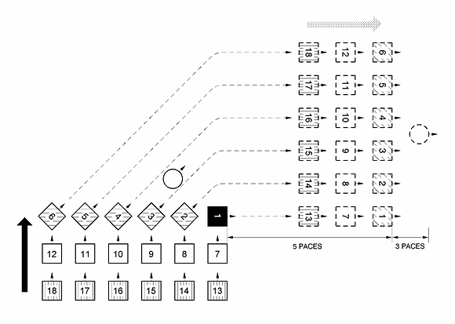 |
| Figure 3-18: Right Form at the Halt |
(1) the marker executes a right turn on the march, marches forward six paces, then halts
(2) simultaneously, the squad commander and the remainder of the front rank execute a right incline on the march then wheel toward the new position in line with the right marker
(3) the centre and rear ranks wheel right to follow the leading individual in each file
(4) upon reaching its new position each file shall halt together, facing the new direction, in succession from right to left
(1) the marker executes a right turn on the march, marches forward six paces, then marks time
(2) simultaneously, the squad commander and the remainder of the front rank execute a right incline on the march then wheel toward the new position in line with the right marker
(3) the centre and rear ranks wheel right to follow the leading individual in each file
(4) upon reaching its new position each file shall mark time together, facing the new direction, in succession from right to left
(1) the executive command is given as the right foot is forward and on the ground
(2) the marker becomes the front-left person
(3) the marker marches forward five paces and halts or marks time, as appropriate
(4) the remaining details are reversed so that the form is executed to the left
(1) the left marker stands fast
(2) the remainder incline left
(1) the left marker marches forward five paces in quick time then halts
(2) the remainder of the squad steps off, wheeling as necessary, each file taking up its new position to the left of the leading file, facing the same direction and halting together in succession from right to left
(1) the left marker stands fast
(2) the remainder incline left
(1) the left marker marches forward five paces in quick time then marks time
(2) the remainder of the squad steps off, wheeling as necessary, each file taking up its new position to the left of the leading file, facing the same direction and marking time together in succession from right to left
|
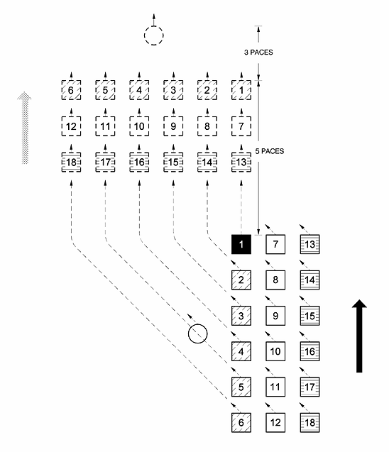 |
| Figure 3-19: Forming Squad in Line from the Halt |
(1) the left marker continues to march forward five paces then halts
(2) the remainder of the squad executes a left incline on the march, wheels to its position to the left of the leading file, with each file halting together in succession from right to left.
(1) the left marker continues to march forward five paces then marks time
(2) the remainder of the squad executes a left incline on the march, wheels to its position to the left of the leading file, with each file marking time together in succession from right to left
(1) the executive command is given as the left foot is forward and on the ground
(2) the marker becomes the front-right person
(3) the marker marches forward six paces and halts or marks time, as appropriate
(4) the remaining details are reversed so that the form is executed to the right
|
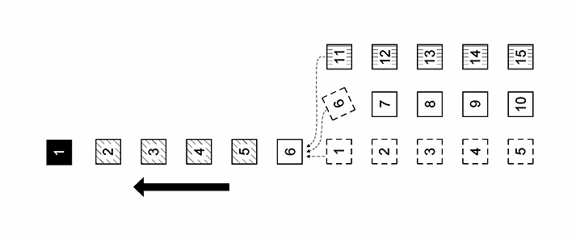 |
| Figure 3-20: Squad in Threes Forming Single File |
(1) the directing (left) flank marches off in quick time
(2) the remainder of the squad mark time. The leading person of each of the remaining files executes a left incline, when the last person of the file to the left is abreast of him, and leads his file in single file behind
(1) the directing (left) flank continues to march forward
(2) the remainder of the squad mark time. The leading person of each of the remaining files executes a left incline, when the last person of the file to the left is abreast of him, and leads his file in single file behind
(1) the directing (left) flank stands fast
(2) the remaining files march to the right of the file on the left and halt when the lead person is abreast of the lead person of the file on the left
(1) the directing (left) flank marks time
(2) the remaining files march to the right of the file on the left and mark time when the lead person is abreast of the lead person of the file on the left
|
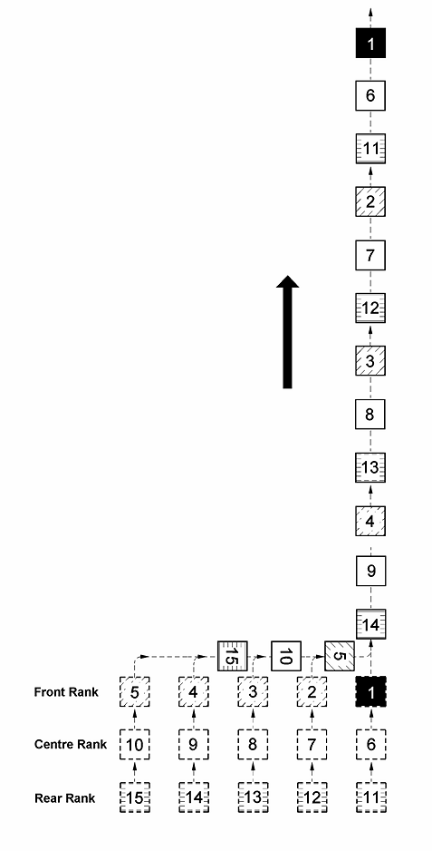 |
| Figure 3-21: Squad in Line Forming Single File |
(1) the file on the directing (right) flank marches forward in quick time
(2) the remainder of the squad mark time then follow the file on the right, wheeling if necessary, when the last person in that file has cleared the formation
(1) the file on the directing (right) flank continues marching forward
(2) the remainder of the squad mark time then follow the file on the right, wheeling if necessary, when the last person in that file has cleared the formation
(1) the leading file stands fast
(2) the remainder of the squad march forward in quick time, take up position to the left of the leading file, and halt in succession from right to left
(1) the leading file marks time
(2) the remainder of the squad march forward in quick time, take up position to the left of the leading file, and mark time in succession from right to left
|
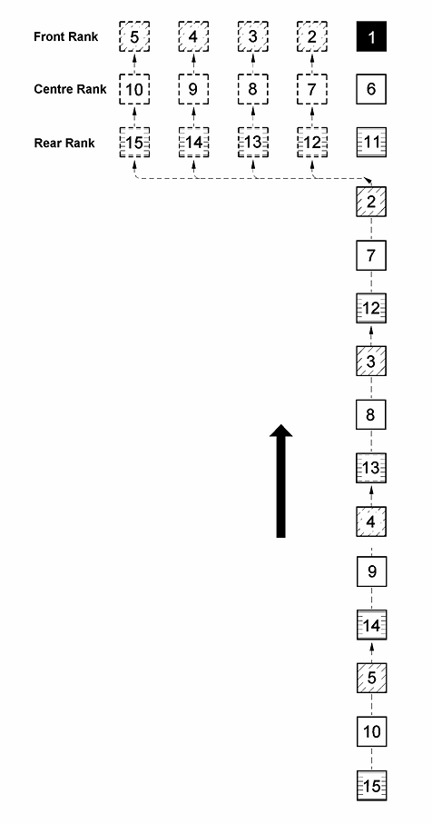 |
| Figure 3-22: Squad in Single File Reforming in Line from the Halt |
(1) when in two ranks:
a. the front rank continues marching forward
b. the rear rank marks time for two paces then steps off with the left foot
(2) when in three ranks:
a. the front rank continues marching forward
b. the centre rank marks time for two paces
c. the rear rank marks time for four paces then steps off with the left foot
(1) when in two ranks:
a. the front rank marks time for two paces then steps off with the left foot
b. the rear rank continues marching forward
(2) when in three ranks:
a. the front rank mark time for four paces
b. the centre rank mark time for two paces
c. the rear rank continues marching forward